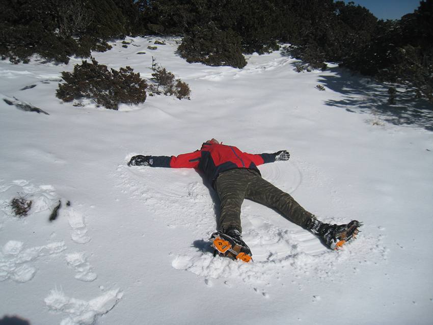
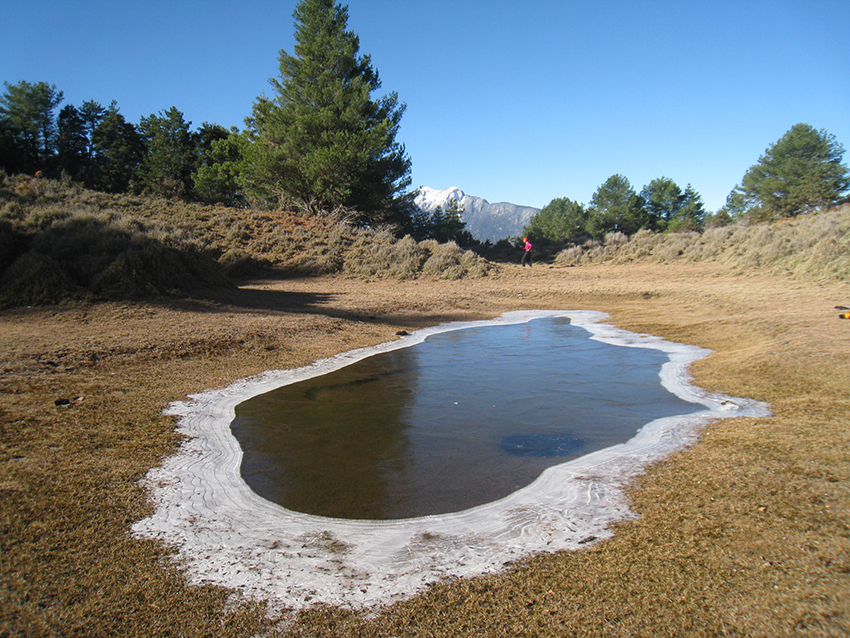
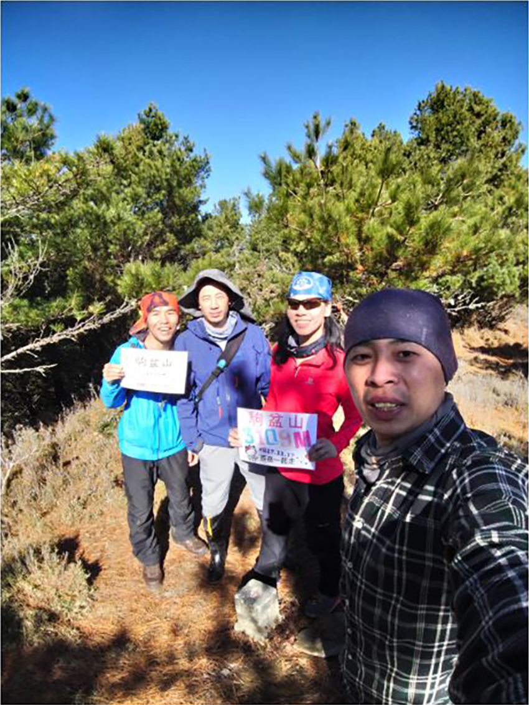
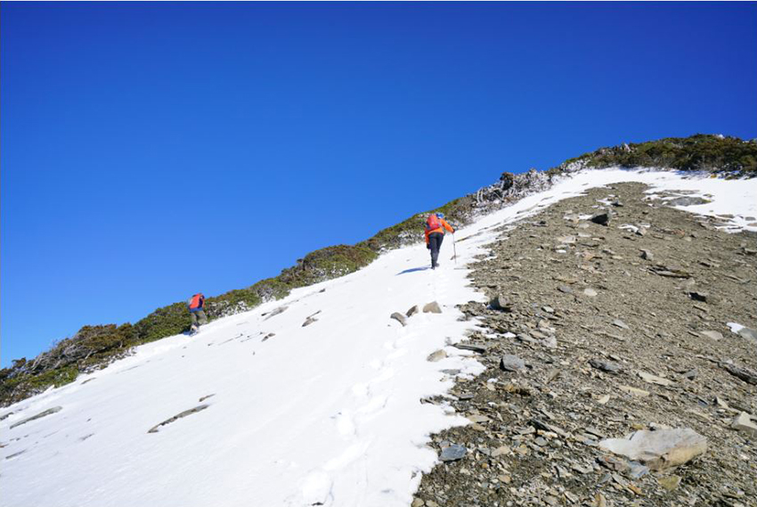

前言：
百岳馬博拉斯山位於臺灣南投縣-信義鄉東埔村與花蓮縣-卓溪鄉立山村交界處，而此次行程從東埔八通關古道進，由花蓮中平林道出，此路線列為百岳四大障礙之一，因此有一定難度，加上是雪季進入，讓原本沿途馬博橫斷百岳高山分級為C+(非雪季最難等級)增加更多不確定因素，因此團隊(家文、蘇蘇、小余哥..)在此次行程能力相互信任為重中之重...
行程美景分享
某年的一月中，出發前一晚宿於東埔-東光飯店，五點多天色還未亮就開始此行程，第一天就要扛重裝到白洋金礦山屋，其中要經過危險崩壁，現在崩壁已有高繞路線，安全考量建議可高繞通過，尤其重裝行進時若睡墊或帳篷外掛，不小心容易撞到卡到山壁，不少登山隊伍在過八通關崩壁都發生跌落事件，因此要格外小心。今天總共花了十二小時四十三分終於走到住宿的山屋。
| 紅色鐵橋鋪上白雪 | ||
 |
||
| 家文在前面探路 | ||
 |
||
| 小余哥 蘇蘇 間隔一段避免落石 | ||
| 緊貼山壁的..蘇蘇.. | ||
 |
||
| 經過積雪的崩壁-當時還未上冰爪，事後看圖真的捏一把冷汗 | ||
天氣冷，都是快天亮才出發，昨天碰到一隊從馬博山屋撤退的學生，因前幾天還下大雪，因未帶冰爪在山屋消耗完糧食後返回，從談話中得知雪積的很厚，加上已經在雪線上，所以冰爪都先上，八通關山之前去過了沒上，於八點半左右上到秀姑巒山(五岳之一)，下午二點多上到今天第二高點，分別為中央山脈第一第二高山，雪季景色真的美到無法用言語形容，分享圖片可能還不足以說明當下的超震撼感受，之前山林政策保守，在臺灣雪季基本上都是封山的...
| 臺灣高山雪季會碰到混合地型- 冰、雪、岩、箭竹、矮灌木欉...影響到冰爪行進 | ||
 |
||
| 遠方的山也都白了頭 | ||
| 雪季重裝背影 | ||
| 繩子結冰，加上有雪很難積超過刺柏，光靠腳的踩點不夠 | ||
行程中，腳下冰爪為了閃箭竹、刺柏卻把褲子勾破，蘇蘇更把綁腿勾一個大洞，家文穿簡易冰爪，小余哥最猛，只穿有釘雨鞋，雪季還是要穿上專業高統登山鞋+綁腿來禦寒跟防止雪太厚掉入鞋裡進而造成腳部寒冷，好天氣很容易口渴，保溫瓶熱水很快就喝光了。
| 秀姑巒山(中央山脈最高峰3805公尺) 馬博拉斯山(次高峰3785公尺又稱: 烏拉孟山) | ||
| 經典的...滑雪動作 | ||
|  | ||
| 矮灌木雪已融化形成小冰柱，而所踩踏的地面也由雪變成了冰 | ||
 |
||
| 走在..小余哥...後面總是有漂亮美照:蘇蘇 | ||
不到下午四點，行程時間九小時二十七分終於來到馬博拉斯山屋，雪積的夠厚了，少說也有二十公分，在山屋前開始堆雪人，玩雪，直到太陽下山變冷躲進山屋...
| 紅色山屋，尤其在雨天或大霧時，增加辦別明顯度 | ||
| 屋簷下超厚積雪，廁所完全不臭 | ||
 |
馬博拉斯山屋要住二晚，山屋包場，四個人睡起來空間夠寬敞，但也超級冷，冷到半夜爬起來煮熱水喝，而且早上起來鞋子竟然變硬的，主要原因是昨天雪進到鞋子裡造成潮濕，無法乾，所以反過來判斷昨天山屋裡的溫度要低於零度，今天要先回到-馬博拉斯山-再往下七百多公尺前往駒盆山中途會經過盆駒山南峰，之後又要返回，但好在是輕裝...
| 博拉斯山一直下切到相對低點的看天池，遠方那座雪白的山應該就是玉山山系 | ||
|  | ||
| 走到無雪無冰就要拆掉冰爪，不然會被箭竹絆倒 | ||
| 駒盆山合照 | ||
|  | ||
| 積雪取決於下雪時的風向，返回馬博拉斯山途中 | ||
|  | ||
| 馬博拉斯山第三天合照 | ||
| 返回山屋 堆雪人 | ||
行程來到第四天，時間最長也是最驚險的一天，因為要到馬布谷山屋，途中會過烏拉孟斷崖及塔比拉斷崖，然而從現場判斷在過烏拉孟時，我竟然從沒繩子的那邊硬用冰爪踩踏出著力點渡過，全員過完後小余哥突然說，我們好像過錯邊，要先下然後靠石壁拉繩輔助，而不是直接從上頭再踩踏點，事後回來跟朋友提到，並認真上網看了過烏拉孟斷崖影片後，自己都有點頭皮發麻。冬天日照比較短，天在五點多就暗下來，好不容易花了十三小時三十五分抵達馬布谷山屋，大伙到山屋後都累了，完全沒人想看星星或夜拍，不久就傳來打呼聲了。
| 三員已通過烏拉孟斷崖，並看著蘇蘇表演蜘蛛人 正常會從下方過，但雪季無人走過，當時判斷腳踏點不易辦別，因此從另一邊踩踏點 | ||
| 烏拉孟斷崖 小心通行 | ||
| 馬利加南山:高度3546公尺南方有秀姑巒山，北邊連接馬博拉斯山 | ||
| 馬利加南東峰前山屋 | ||
下午二點半，雖然抵達山屋，但今天的行程還未結束，休息完後還有一段很長路要走，也就是推到開闊的馬布谷山屋，中途會經過另一個瘦稜，塔比拉斷崖，當下走是沒感覺，但看到隊友的照片後，還蠻震憾的...
| 塔比拉斷崖，應該算瘦稜 |
來到了第五天，今天有二座百岳要入帳：馬西山及喀西帕南山，好天氣加上高度也慢慢下降，因此雪消失大部份，只剩下殘冰，此時冰爪已收起，而今天終於要把揹了五天的帳篷開張，野外札營於35K工寮附近，這時高度也降至到2200~2100公尺左右，相對比較不會那樣寒冷，早早下午二點多就下來了。
| 馬西山日出照 |
| 全員完成馬博橫段 馬西山及喀西帕南山團照 |
| 看到這告示牌間接說明馬博橫斷的危險性 |
| 太平谷 |
 |
| 天氣好，太平谷很熱，順走剛好進入森林及小溪避曬 |
| 35K工寮札營 |
來到最後第六天，昨天帳篷有些動靜，老鼠咬破了隊友帳篷，看起來這裡雪季登山客比較少，讓小動物餓到想突破帳篷，今天摸到七點十幾分才出發，從林道要下切要雙溪匯流口前有很高的落差，切到溪底時看到一隻死亡沒多久的山羌屍體，應該是受到什麼驚嚇跌落，大伙在一處大石頭旁吃點東西補充水份休息，並於快十二點前到中平林道19K接駁，車可回轉處等待，但一下大背包就感覺有東西咬我腰，但不是螞蟥，而是硬蜱，第一時間馬上拔除，還好未鑽入身體，然而中平林道有名的彩色螞蟥隊友只賺到1~2隻，可能是天氣冷還沒舒醒，下到林道差不多二十分接駁就抵達，全員安全完成雪季-馬博橫斷...後會有期，因為此次行程未包含美麗仙境-嘆息灣-
| 小余哥-攝於35K工寮 |
| 左上圖:森林處下切至溪/左下圖:跌落死亡的山羌 |
| 中平林道19K處/左下圖:硬蜱 |
心得分享
基本上雪季縱走是難度非常高的，因位處於亞熱帶的臺灣，雪不會持續太久，因此雪下完馬上就會有融雪現象，加上潮濕，體感溫度會更加冷，不能單單看溫度來比較跟國外的乾冷，加上雪季裝備增加揹負重量，而且沒多大機會去練習，零零總總風險疊加起來是很高的，個人需改善如下:
一、鞋子未穿專業登山鞋，鞋底用手還彎折的了，因此上冰爪後行進時會因為鞋底彎曲而造成鬆脫或雪積在鞋底與冰爪之間。
二、冰爪行進練習不足，臺灣地型特殊難得下雪，因此雪不夠厚能把所有的植物或岩石覆蓋住，形成冰、雪、岩及箭竹、矮灌木地型，在行程中冰爪勾破褲子，隊友勾破綁腿，冰爪行進時需要外八行進，而且不能雙腳交叉，但隊友一個穿簡易冰爪，一個穿釘雨鞋，真的很佩服。
三、雪季飲用水，建議最好帶大一點保溫瓶，因為天氣冷一般沒保溫的水都會變很涼，喝多了會拉肚子，以及身體溫度下降快，因自己前二天拉肚子，但也不知道真正原因。
四、未帶露宿袋，別以為住山屋就能有多溫暖，非雪季台灣登山睡袋負3至5度就很夠用，因此不太會去買到負10度以下的，太貴而且太重，所以搭配露宿袋是不錯選擇，山屋有多冷。舉個例子，此次住在馬博山屋鞋子濕了放在山屋內，睡了一覺起來鞋子變硬穿不下去。
五、過烏拉孟斷崖未照傳統路徑過法，事先未看過網路影片，因此沒有個底，當下直接判斷是有一定風險的，行程之中增加信心程度是必要的，隊友能力不外乎是首選，而做足功課更能增加行程的順暢度。